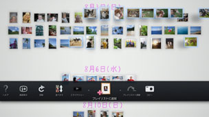

お気に入りの写真をプレイリストにする
お気に入りの写真を集めてプレイリストを作成できます。
新しいプレイリストを作成する
1. |
ライブラリエリアからプレイリストにしたい写真を選んで  |
||||||||||||
|---|---|---|---|---|---|---|---|---|---|---|---|---|---|
2. |
プレイリストエリアの何もない位置で |
||||||||||||
3. |
プレイリストの設定をする。
|
 （プレイリストに追加）を選ぶ。
（プレイリストに追加）を選ぶ。 ボタンを押す。
ボタンを押す。
 （ミュージック）から選ぶ
（ミュージック）から選ぶヒント
- 設定した内容はあとから
 （編集）で変更することができます。
（編集）で変更することができます。 - 設定はプレイリストごとに変えることができます。
プレイリストに写真を追加する
1. |
プレイリストに追加したい写真を選んで |
|---|---|
2. |
作成済みのプレイリストの上で |
プレイリストの設定を編集する
設定を変更したいプレイリストを選んで ボタンを押し、 （編集）を選びます。
ボタンを押し、 （編集）を選びます。
プレイリストの場所を移動する
プレイリストの位置を自由に変えることができます。移動させたいプレイリストを選んでボタンを押し、  （移動）を選びます。左スティックで移動します。
（移動）を選びます。左スティックで移動します。
ヒント
プレイリストを選んで ボタンを押したまま、左スティックで移動することもできます。
ボタンを押したまま、左スティックで移動することもできます。
プレイリストを削除する
削除したいプレイリストを選んでボタンを押し、  （削除）を選びます。
（削除）を選びます。